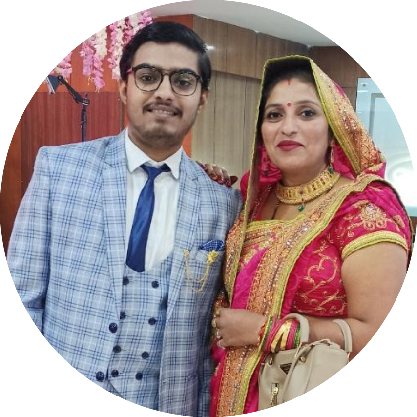

|  |
Gaurav Pathak
3rd Year Student at J.C. Bose University of Science & Technology, YMCA, Faridabad
I am an electronics & instrumentation Engineer and pursuing my 3rd year at J.C. Bose University of Science & Technology, YMCA, Faridabad. I have been an active IEEE member from the past one and a half year and an active Student member at my
Student Branch from the past two and a half year. I specialize in volunteering with various sections as well as regions and helping them reflect their best description via designs, content & support.I have actively volunteered at various student
branches, affinity groups, sections, conferences like DELCON 2022, Returning Mothers Conference 2021 etc.
I have joined IEEE YMCA Student Branch as a Student Member, after a span of 1 year, I had been promoted to the Membership Coordinator and to the Sessions Head & Webmaster at IEEE YMCA WIE. I was also the Membership Lead and an organising
committee member at IEEE Drive 2021, a Membership Development Drive in collaboration with IEEE Delhi Section and IEEE Region 10 Student Activities Committee.
|